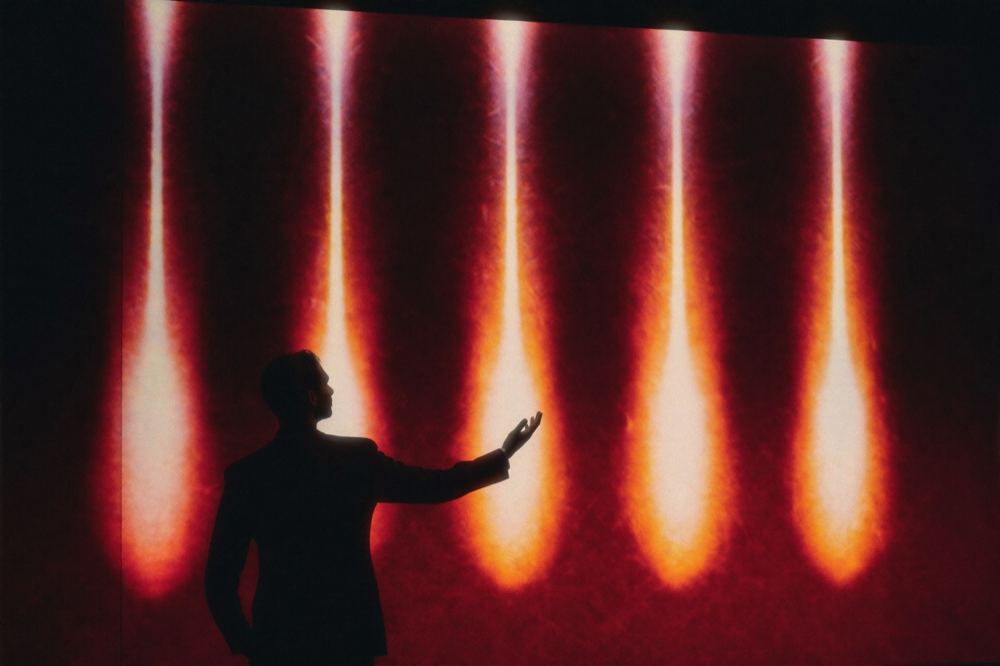

톤코퍼레이션 최고기술책임자(CTO) 토니(Tony)는 톤티비가 후발 주자가 아니라 시장의 판도를 바꿀 ‘게임 체인저’가 될 수 있는 이유로 다섯 가지를 꼽았다. 넷플릭스도, 중국계 숏폼 강자들도 갖지 못한 조합이라는 것이 그의 설명이다.

승부수 5가지
① 독점적 접근성 — 10억 텔레그램 이용자에게 무료·원클릭으로 도달하는 유일한 전문 숏폼 드라마 플랫폼. 경쟁사가 광고로 사 와야 하는 트래픽이, 톤티비에는 이미 깔려 있다.
② 부담 없는 무료 진입 — 누구나 비용 없이 시작할 수 있어 초기 사용자 확보에 압도적으로 유리하다. 결제 장벽이 사라지면 모수가 폭발한다.
③ 강력한 네트워크 효과 — 시청과 동시에 토론·공유·추천이 일어나는 소셜 결합형 구조. 콘텐츠가 메신저를 타고 스스로 퍼진다.
④ 시청자 참여형 보상 — 콘텐츠를 즐기는 행위 자체가 혜택과 리워드로 돌아와 높은 충성도를 확보한다. 소비자가 아니라 파트너다.
⑤ 글로벌 동시 출시 — 지역별 앱스토어 승인 절차 없이 전 세계 동시 서비스가 가능하다. 화제성이 분산되지 않는다.
“성장과 수익을 동시에”
토니 CTO는 다섯 가지 강점이 따로 노는 것이 아니라 하나의 선순환으로 맞물린다고 강조한다. 무료 진입이 모수를 키우고, 네트워크 효과가 확산 속도를 높이며, 참여형 보상이 유저를 묶어두고, 글로벌 동시 출시가 그 효과를 전 세계로 증폭한다.
수익 구조 역시 명확하다. 모든 이용자가 무료로 즐기는 ‘광고 기반’ 모델과, 광고 없는 경험을 원하는 이용자를 위한 ‘프리미엄 구독’ 모델이 함께 작동한다. 여기에 각국 현지 지사의 광고주 유치가 더해지며, 사용자 규모가 커질수록 광고와 구독 수익이 함께 성장한다.
톤티비는 시청자에게는 최고의 경험을, 창작자에게는 새로운 무대를, 산업에는 새로운 일자리를 만들어내는 플랫폼이 될 것이다. 숏폼 드라마와 라이브 콘텐츠 시장에서 명실상부한 글로벌 1위로 도약하겠다. — 토니(Tony), 톤코퍼레이션 CTO
톤티비는 2026년 9월 정식 오픈 이후 숏폼 드라마를 기반으로 라이브 스트리밍 등 실시간 콘텐츠로 영역을 넓히고, 현지 지사를 거점으로 한 글로벌 확장에 속도를 낼 방침이다.
블로그 전체 보기